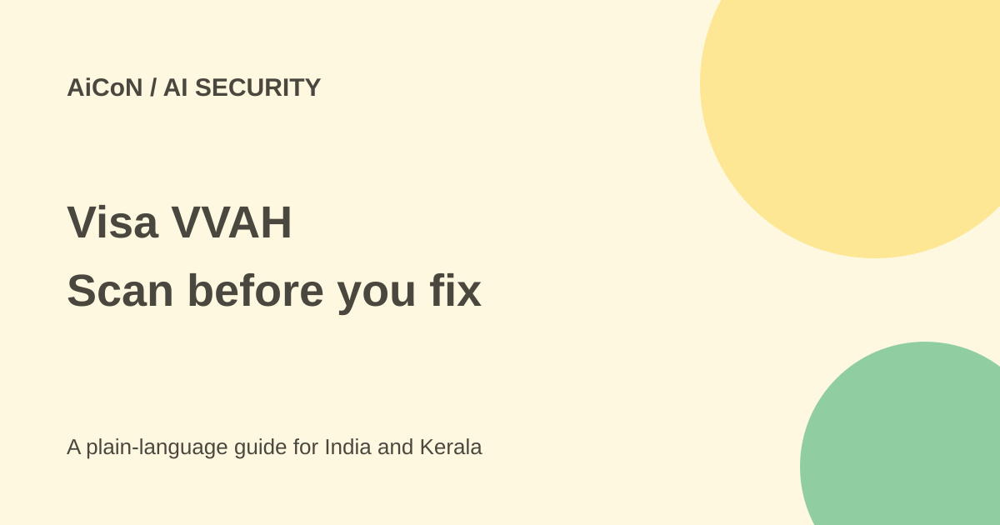

Visa VVAH: scan code with AI without accidental edits
Visa Vulnerability Agentic Harness is an AI-assisted code-security framework. A plain scan can edit your source files. Start with a separate copy and detection-only settings.

What is VVAH?
VVAH is Visa's open-source framework for finding possible software weaknesses, proposing repairs and reviewing those repairs with AI models. Its standard workflow has four phases and eleven stages: discovery and modelling, deeper analysis and verification, reporting, then remediation and validation. An optional static Stage 0 is used by its taint-first profile.
It maps an application's attack surface, uses several analysis views, filters and combines findings, and produces Markdown and SARIF reports. SARIF is a structured format that security tools can read. Detection supports Anthropic and OpenAI-compatible model access; current documentation also describes model-neutral backends for later stages. Check the configuration matrix rather than assuming every model can perform every action.
The most important warning: scan can change code
The shipped default continues past detection into remediation, with fix mode capable of editing the target repository. Do not run a plain vvaharness scan on your only copy of a project. The README's detection-only command adds --stop-after s9.
AI validation is not the same as compiling and testing your application. The README explicitly says VVAH does not compile, build or run tests against the patched tree. Review any proposed changes yourself, run your normal tests and get an authorised developer's approval before merging.
Free code, separate model bills
The actual LICENSE and current package metadata identify Apache 2.0. GitHub's repository summary still labels the licence "Other", but the licence file is the stronger evidence. Dependencies have their own terms. The repository is not currently accepting outside code contributions.
Model access is supplied separately. API calls can be billed by your chosen provider; a paid coding-agent account may have its own usage limits. The cost preview command spends nothing, according to the README, but later scan commands can use many tokens. Per-stage and per-finding caps are not one overall spending ceiling. Set provider-side spending controls as well.
How to start with an authorised test
- Use only code you own or have explicit permission to assess. Choose a trusted repository and make a separate checkout or disposable test copy.
- Read the README, setup guide, licence and security notes. Current package metadata requires Python 3.11 or newer. Some setup text still says 3.10; use the package requirement.
- Install in an isolated environment and select approved model endpoints. Keep model credentials out of source control.
- Use
vvaharness doctorto check readiness. This can make live connectivity probes; it is not the no-cost estimate command. - Run
vvaharness estimate --repo /path/to/targetfor a rough scope and cost preview. It is not a guaranteed final bill. - For detection only, use
vvaharness scan --repo /path/to/target --stop-after s9. Check the chosen profile and limits before starting. - Review candidate findings, evidence and false positives. Consider fixes separately, then build and test the changed application yourself.
Privacy and practical limits
Model-backed roles send prompt data to the selected provider or gateway. That may include code and related context. Local execution alone does not make the whole workflow private. Use company-approved endpoints, exclude secrets and review what information may leave the machine.
The project warns about elevated privileges and the risk of exposing credentials and sensitive files when processing malicious repositories. Isolation still matters during detection-only work. Current structured taint evidence is strongest for Python, Java and C#; other languages have different limits. The project has not published precision and recall figures. Treat findings as candidates, not confirmed vulnerabilities.
For India and Kerala
This suits experienced engineering or security teams more than casual phone users. A student team can start with its own small project and approved model access. Never scan a college system, customer repository or public service merely because you can download its code.
What changed since the original post?
The 1 October post warned about model costs, authorised use and human review. This guide resolves the earlier licence-label uncertainty using Apache 2.0 in the actual file, confirms Python 3.11 from package metadata, and adds the current default source-edit warning. AI checking does not replace running tests.
Frequently asked questions
Does it automatically prove a bug?
No. Its output needs human review, and runs can differ.
Can I avoid automatic source changes?
Use detection-only stopping at S9 and a separate checkout. Review the profile before running it.
Is the model bill included?
No. Arrange and monitor your own model access.
Was VVAH run for this guide?
No. Commands and warnings were checked against current sources; no repository scan was performed.
Sources: Official repository · Actual licence · Package requirements · Setup guide · User guide. Checked 7 October 2026.